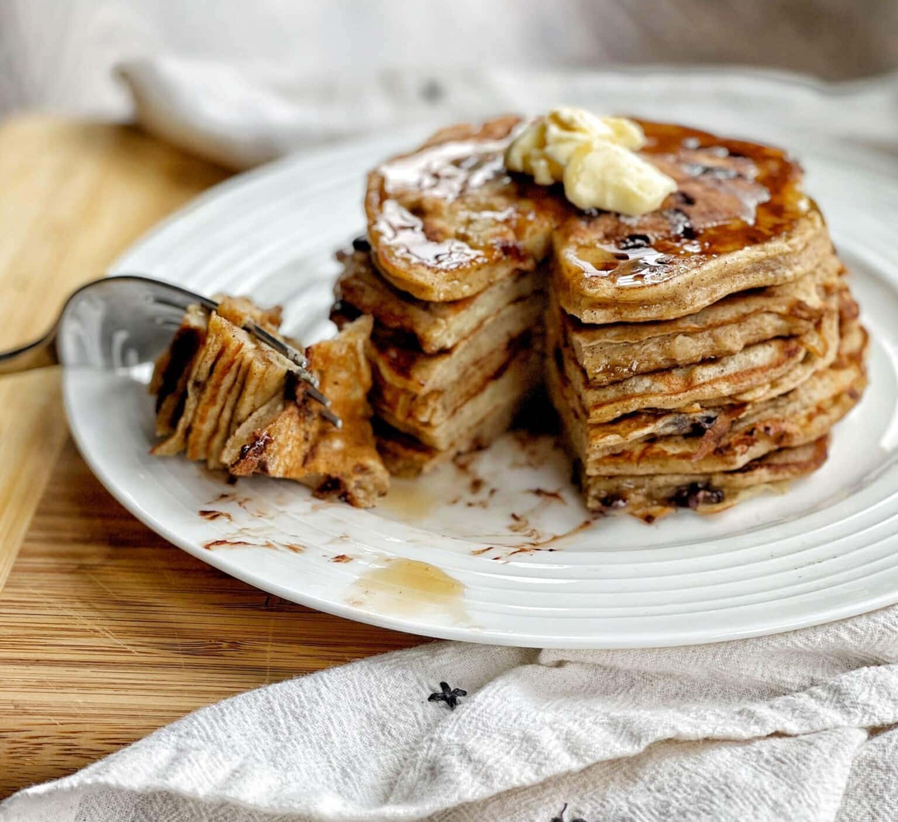

Banana Pancake

Description
Banana pancakes are a delightful and wholesome breakfast treat that
combines the natural sweetness of ripe bananas with the fluffy texture of
traditional pancakes. Made with a simple batter of mashed bananas, eggs,
flour, milk, and a touch of baking powder, these pancakes are quick to
prepare and incredibly versatile. The bananas not only add sweetness but
also keep the pancakes moist and tender. You can customize them with
additions like chocolate chips, nuts, or a sprinkle of cinnamon for extra
flavor. Served warm with a drizzle of maple syrup, a dollop of yogurt, or
a handful of fresh berries, banana pancakes are a comforting and
nutritious way to start the day.
Main Ingredients
- Ripe Bananas: 2 medium sized bananas (the riper, the sweeter).
-
Flour: 1 cup all purpose flour (or substitute with whole wheat flour,
oat flour, or gluten free flour).
-
Milk: 3/4 cup (dairy or plant based like almond, oat, or soy milk).
- Egg: 1 large egg (or a flax egg for a vegan option).
- Baking Powder: 1 teaspoon (for fluffiness).
- Salt: A pinch (to enhance flavor).
- Butter or Oil: For cooking the pancakes.
Optional Add Ins
-
Sweetener: 1-2 tablespoons of sugar, honey, or maple syrup (if you
prefer sweeter pancakes).
- Vanilla Extract: 1 teaspoon (for extra flavor).
- Cinnamon: 1/2 teaspoon (for warmth and spice).
- Chocolate Chips: 1/4 cup (for a decadent twist).
- Nuts: Chopped walnuts or pecans for crunch.
Toppings (Optional)
- Maple syrup
- Fresh berries (strawberries, blueberries)
- Sliced bananas
- Whipped cream or yogurt
- Nut butter (peanut butter, almond butter)
- A dusting of powdered sugar
Steps
-
Prepare the Batter :
-
Mash the Bananas:
-
In a large mixing bowl, mash 2 ripe bananas with a fork until
smooth.
-
Add Wet Ingredients:
-
To the mashed bananas, add:
- 1 large egg (or flax egg for vegan option)
- 3/4 cup milk (dairy or plant based)
- 1 teaspoon vanilla extract (optional)
- Mix well until combined.
-
Add Dry Ingredients:
-
In the same bowl, add:
- 1 cup all purpose flour (or substitute)
- 1 teaspoon baking powder
- A pinch of salt
- 1/2 teaspoon cinnamon (optional)
-
Gently stir until just combined. Avoid over mixing it's okay if
there are a few lumps.
-
Fold in Add Ins (optional):
-
If using chocolate chips, nuts, or other add ins, fold them into
the batter.
-
Heat the Pan :
- Heat a non stick skillet or griddle over medium heat.
- Lightly grease the surface with butter or oil.
-
Cook the Pancakes :
-
Pour the Batter:
-
Use a ladle or measuring cup to pour about 1/4 cup of batter
onto the skillet for each pancake.
-
Cook Until Bubbly:
-
Let the pancakes cook for 2-3 minutes, or until bubbles form on
the surface and the edges look set.
-
Flip and Cook:
-
Carefully flip the pancakes and cook for another 1-2 minutes, or
until golden brown on both sides.
-
Repeat:
-
Continue with the remaining batter, adding more butter or oil to
the skillet as needed.
-
Serve :
- Stack the pancakes on a plate.
-
Top with your favorite toppings, such as:
- Maple syrup
- Sliced bananas
- Fresh berries
- A dusting of powdered sugar
- A dollop of yogurt or whipped cream